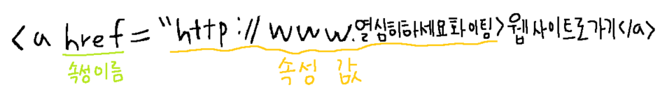

1. HTML
: Hyper Text Markup Language
- 1990년 Tim Berners-Lee (팀 버너스리) 가 정의
- 웹 페이지를 기술하기 위한 마크업 언어
- 마크업 (markup) 언어 : 텍스트에 <>(태그) 를 붙여서 텍스트가 문서의 어디에 해당하는지를 기술 한 것
2. W3C
: World Wide Web Consortium
- HTML에 대한 표준을 관장
- 웹의 프로토콜과 가이드라인을 개발
3. 주석
: 화면 상에는 표시 되지 않고 코드를 설명하는 글
<!--주석으로 넣고 싶은 말을 여기에 적으면 됩니당-->
4. 태그
1) 이중 태그
- 시작태그와 종료태그가 모두 있는 경우
- ex. <html>, <title>
2) 단일 태그
- 시작태그만 있는 경우
- ex. <br>, <meta>
5. 속성
: 요소에 대한 추가적인 정보를 제공

6. 절대경로, 상대경로
: ../ 은 상위 폴더, ./ 은 현재 폴더